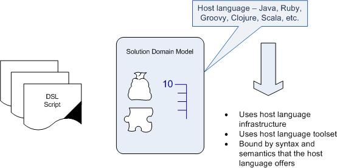

Penn State Great Valley Engineering
DSL Course - Lecture 1
Introduction to Domain Specific Languages
What is a DSL?
Domain-specific language (noun): a computer programming language of
limited expressiveness focused on a particular domain.
- Computer
programming language: A DSL is used by humans to instruct
a computer to do something. As with any modern computer
programming language, its structure is designed to make it easy for
humans to understand, but it should be something executable by a
computer.
- Language
nature: A DSL is a programming language, and as such
should have a sense of fluency where the expressiveness comes not just
from individual expressions but also from the way they can be composed
together.
- Limited
expressiveness: A general-purpose programming
language provides lots of capabilities: supporting varied data,
control, and abstraction structures. All of this is useful
but makes it harder to learn and use. A DSL supports a bare
minimum of features needed to support its domain. You can't
build an entire software system in a DSL; rather, you use a DSL for one
particular aspect of a system.
- Domain focus:
A limited language is only useful if it has a clear focus on a small
domain. The domain focus is what makes a limited language
worthwhile.
Example DSL Languages
Life:
Aviation, economics,
politics, finance, brokerage, auto, restaurant, music, construction,
athletics, etc. They are everywhere. Does
your family have it's own DSL?
Computers:
SQL, Ant, Rake, Make, CSS,
YACC, Bison, ANTLR, JUnit, HTML, and many many more. What
DSL's do you use on a regular basis?
How is a DSL different from General Purpose Languages?
- DSL are targeted to a specific problem area
- A DSL contains syntax and semantics that model concepts at
the same level of abstraction as the problem domain does.
Manipulating Abstractions
DSLs are really a way of
programming the manipulation of an abstraction. In software
development, we build abstractions and then manipulate them, often on
multiple levels. The most common way to build in abstraction
is
by implementing a library or framework; the common way to
manipulate this framework is through command-query API calls.
In
this view a DSL is a front-end to a library providing a different style
of manipulation to the command-query API. In this context,
the
library is the Semantic Model of the DSL. A consequence of
this
is that DSLs tend to follow libraries, and indeed Fowler considers a
Semantic Model to be a necessary adjunct to a well-built DSL.
Types of DSLs
External DSL
An
external DSL is a language separate from the main language of the
application it works with. Usually, an external DSL has a
custom
syntax, but using another language's syntax is also common (XML is
frequent choice). A script in an external DSL will usually be
parsed by a code in the host application using text parsing techniques.
The Unix tradition of little languages fits this
style.
Examples of external DSLs that you probably have come across
include regular expressions, SQL, AWK, and XML configuration files for
systems like Struts and Hibernate.
When you write in SQL - it's SQL - there is not mistaking it for
another language. Same for make,
LEX and YACC.
Internal DSL
An
internal DSL is a particular way of using a general-purpose language.
A script in an internal DSL is valid code in its
general-purpose
language, but only uses a subset of the language's features in a
particular style to handle one small aspect of the overall system.
The result should have the feel of a custom language, rather
than
its host language. The classic example of this sytle is Lisp;
Lisp programmers often talk about Lisp programming as
creating
and using DSLs. Ruby has also developed a strong DSL culture:
Many Ruby Libraries come in the style of DSLs. In particular,
Ruby's most famous framework, Rails, is often seen as a collection of
DSLs.

When you write Rails code you are writing in Ruby!
When you write Gradle code you are writing in Groovy!
Language Workbench or Nontextual DSLs
A
language workbench is a specialized IDE for defining and building DSLs.
In particular, a language workbench is used not just to
determine
the structure of a DSL but also as a custom editing environment for
people to write DSL scripts. The resulting scripts intimately combine
the editing environment and the language.
This is a growing
industry trend toward richer ways of modeling the domain. A
DSL
needs to be a representation of the domain but the definition doesn't
mandate that this representation or language needs to be a textual one.
Intentional's
DSL Workbench and JetBrains' Meta
Programming System (MPS) are two examples of rich DSL
modeling tools.
For
all practical purposes you can consider Language Workbench/Nontextual
DSLs as external DSLs because the underlying infrastructure that you
use to develop DSL APIs isn't a host language. But just wait
a
while someone will prove me wrong soon :-)
Fuzzy Boundaries for DSL's
Identifying
DSL's is not always so simple. Internal DSLs, because they
are
implemented in a general purpose language may seem to contain all the
expressiveness of the GPL. Understanding the characteristics
of a
DSL require understanding a small subset of the GPL that is used to
implement the DSL.
External DSLs have the GPL as the boundary
itself. However, if the expressiveness of the DSL is more
than
"limited", say with a mathematics or statistical DSL, you may see a
greater use of GPL features such as conditions, looping constructs and
variables.
You should also never forget "that if your only tool
is a hammer everything looks like a nail." I have seen
programmers fall in love with a DSL then try to use it for all
processing (XSLT, VBScript, JavaScript, Microsoft Access, etc.)
One valuable insight you will hopefully get from
this course
is to understand when to NOT use a technology!
Many DSLs are
used in a fragmentary many manner. For example, you don't
generally create a regular expressions script but mix regular
expressions into your general purpose code. This is okay and a
common use of DSLs. You do not always have a DSL like make,
Ant
and Gradle in which you create a script to be run to do a complete job.
Benefits with DSLs
- DSLs are a tool with limited focus.
- Not a fundamental change to way we do software development
- DSLs are a thin veneer over a model - a library or framework
- Need to separate the benefits provided by the model from
the benefits provided by the DSL
Improving Development Productivity
- Provides
a means to more clearly communicate the intent of a part of the system.
For the same reasons we want meaningful variable names,
documentation and clear coding constructs - we want to use DSLs.
- Limited expressiveness of DSLs makes it harder to say the
wrong things and easier to see when you have made an error.
- Clearly
defining the model will provide increases in productivity.
It avoids duplication by gathering together common code; it
provides an abstraction to think about the problem that makes it easier
to specify what's going on.
Communication with Domain Experts
Communication,
communication, communication! Could be the largest factor in
project failure. Users are busy, domain experts have other
things
to do besides sit with you and model their system. Taking the
time to define a clear yet precise language to a domain may be the
efficient method in capturing the model and it's language.
Change in Execution Environment
Evaluating
an application context at runtime rather than compile time is a huge
advantage. As software development moves to using more and
more
components - dependency injection - there is a greater need to
configure the environment at runtime. Enter XML configuration
files.
Using a DSL language with a rules engine overcomes
the limitations of a host language and expresses things in a comfortable
DSL and then generates code for the actual execution environment to use.
Think of a SQL generator based on an understanding of the
domain
model and the database structure....
Alternative Computational Model
Computers
are deterministic and we often want our software to behave the same way -
what's called imperative computing. 2+2=4 -- it easy to
understand.
Alternatively, you hear people talk about
declarative programming which is a catch-all phrase for all things
'non-imperative'. These are generally styles that allow
programmers to declare what should happen. DSL's can make a
big
difference as it makes it much easier for people to manipulate
declarative programs that populate this type of semantic model.
Problems with DSLs
There
are no 'silver bullets' and DSLs are no exception. Most
problems
with DSLs are typical development problems. So most
likely,
the best reason to not use a DSL is that none of the above benefits are
worth the cost of writing a DSL!
Language Cacophony
This is
common in software today as the complexity of our development
environment grows. The most important insight you may get out
of
this class is recognizing DSLs in your development environment and
being able to learn and "partition" them from all the other languages.
DSLs should be limited and simple so understanding them
should
not be a huge burden. DSLs can simplify complex areas of your
software making the system easier to learn.
DSLs are NOT general-purpose languages! If your DSL is
looking like one then you have failed to write a good DSL!
Fowler argues that the incremental cost of learning a DSL is quite
small compared to the cost of understanding the model.
Cost of Building
The
cost of writing a DSL depends on many factors - the skills of the
programmers, understanding of the model or libraries underneath the
DSL, size of the model, internal DSLs are simpler than external DSLs,
level of reuse in other systems, etc.
Maintenance of DSLs must
be considered. If the model is new maybe you should wait to
build
a DSL wrapper until the model is more mature and less fluid.
The
cost of the DSL is over and above the costs of the model.
Excessive
DSLs probably means that you will have some bad DSLs to maintain and
that is the same as any bad code - a waste of resources.
Ghetto Language
I
have seen this where some Wizard of Oz talks the powers that be into
spending some outrageous amount of money on some DSL that morphs into a
GPL. Example: a project I know of built their own OR mapping
tool. "Let's not use Top Link or Hibernate, let's write our
own
OR mapping tool." Lots of performance issues, lots of
maintenance
issues, lots of programmer turnover later, it is being ripped out and
replaced with JPA/Hibernate.
There's always a danger a DSL will evolve into a GPL!
Don't
build something that you should be taking from the outside.
If it
is not in your core competency then it probably should not be written
in house.
Blinkered Abstraction
There is nothing more beautiful
that abstraction that fits the subject area. It is the 'siren
song' of software development. Developers fall in love with
their
abstraction then try to fit everything that comes along into the
model/abstraction. This is the "Blinkered Abstraction" and
you
don't want to change that which you find so beautiful. This
is
true from any model/abstraction including those that don't have DSLs.
In software everything evolves, nothing is finished.
DSL Lifecycle
Model first, library first or DSL first?
What
you need first is an understanding of what the domain is! It
seems to me that you need domain experts, an already existing model or
library. Try to determine how much change will be applied to
this
domain. If you believe there is a great deal of change coming
then maybe it is better to write a library with it's attendant test
suites and let the domain settle down, then write a DSL wrapper.
What makes a Good DSL Design?
The overall goal for a DSL is clarity for the reader.
Iterative design will let you try out ideas on your target
audience.
Use
the domain language in the DSL. If the users of the DSL are
familiar with the jargon of the domain they will intuitively understand
the DSL. Jargon is there to enhance the communication within
a
domain even if it sounds like gibberish to those outside.
Example - The Build Domain
make,
ANT and Gradle are all DSLs that are specific to the domain of building
software. They aren't sexy, they are not going to impress
your friends and you'll hardly notice a build tool until it's time to
redeploy that 1,000 class application you have built in C# or Java or
whatever language you have been working in. Then all the
interesting code, killer IDE's and plug-ins, and amazing design
patterns aren't worth nearly has much as typing make or ant
and watching your boring tool handle complicated dependencies,
deployment onto multiple servers via FTP and SSH, and log errors.
All these tools do essentially the same thing but do
it in a different
manner. By examining these three DSLs we will gain insight
into
the common characteristics and differences of DSLs.
make
You start with the command:
make makefile
make reads the makefile in the current directory and begins by
processing the first rule. In the example, this rule is for relinking
edit; but before make can fully process this rule, it must process the
rules for the files that edit depends on, which in this case are the
object files. Each of these files is processed according to its own
rule. These rules say to update each ‘.o’ file by compiling its source
file. The recompilation must be done if the source file, or any of the
header files named as prerequisites, is more recent than the object
file, or if the object file does not exist.
The other rules are processed because their targets appear as
prerequisites of the goal. If some other rule is not depended on by the
goal (or anything it depends on, etc.), that rule is not processed,
unless you tell make to do so (with a command such as make clean).
Before recompiling an object file, make considers updating its
prerequisites, the source file and header files. This makefile does not
specify anything to be done for them—the ‘.c’ and ‘.h’ files are not
the targets of any rules—so make does nothing for these files. But make
would update automatically generated C programs, such as those made by
Bison or Yacc, by their own rules at this time.
After recompiling whichever object files need it, make decides whether
to relink edit. This must be done if the file edit does not exist, or
if any of the object files are newer than it. If an object file was
just recompiled, it is now newer than edit, so edit is relinked. Thus,
if we change the file insert.c and run make, make will compile that
file to update insert.o, and then link edit. If we change the file
command.h and run make, make will recompile the object files kbd.o,
command.o and files.o and then link the file edit.
A simple makefile consists of “rules” with the following shape:
target ... : prerequisites ...
recipe
...
...
A sample makefile:
edit : main.o kbd.o command.o
display.o \
insert.o search.o files.o utils.o
cc -o edit main.o kbd.o command.o display.o \
insert.o search.o files.o utils.o
main.o : main.c defs.h
cc -c main.c
kbd.o : kbd.c defs.h command.h
cc -c kbd.c
command.o : command.c defs.h
command.h
cc -c command.c
display.o : display.c defs.h
buffer.h
cc -c display.c
insert.o : insert.c defs.h
buffer.h
cc -c insert.c
search.o : search.c defs.h
buffer.h
cc -c search.c
files.o : files.c defs.h
buffer.h command.h
cc -c files.c
utils.o : utils.c defs.h
cc -c utils.c
clean :
rm edit main.o kbd.o command.o display.o \
insert.o search.o files.o utils.o
Who is doing the parsing of the makefile?
Where does the 'syntax' of the rules come from?
Is this internal or external DSL?
ANT
Ant is different from make.
Instead of a model where it is extended with shell-based commands, Ant
is extended using Java classes. Instead of writing shell commands which
are inherently OS specific, the
configuration files are XML-based, calling out a target tree where
various tasks get executed. Each task is run by an object that
implements a particular Task interface.
So Ant give you more platform independence and the flexibility of Java.
If you are a UNIX shell expert you probably loose some
features like - `find
. -name foo -exec rm {}` - but how much is the flexibility
worth to you and your project?
You start ant with the command:
ant -f buildfile
Your buildfile might look something like this:
<project name="MyProject" default="dist" basedir=".">
<description>
simple example build file
</description>
<!-- set global properties for this build -->
<property name="src" location="src"/>
<property name="build" location="build"/>
<property name="dist"
location="dist"/>
<target name="init">
<!-- Create the time stamp
-->
<tstamp/>
<!-- Create the build directory
structure used by compile -->
<mkdir dir="${build}"/>
</target>
<target name="compile" depends="init"
description="compile the source " >
<!-- Compile the java code from
${src} into ${build} -->
<javac srcdir="${src}"
destdir="${build}"/>
</target>
<target name="dist" depends="compile"
description="generate the distribution" >
<!-- Create the distribution
directory -->
<mkdir dir="${dist}/lib"/>
<!-- Put everything in ${build}
into the MyProject-${DSTAMP}.jar file -->
<jar
jarfile="${dist}/lib/MyProject-${DSTAMP}.jar"
basedir="${build}"/>
</target>
<target name="clean"
description="clean up" >
<!-- Delete the ${build} and
${dist} directory trees -->
<delete dir="${build}"/>
<delete dir="${dist}"/>
</target>
</project>
Same questions:
Who is doing the parsing?
Where did all those XML tags come from?
Is this internal or external DSL?
Gradle
Gradle is a build system for the Java (JVM) world. Gradle provides:
- A very flexible general purpose build tool like Ant.
- Switchable, build-by-convention framework.
- Very powerful support for multi-project builds.
- Very powerful dependency management.
- Full support for your existing Maven or Ivy repository
infrastructure.
- Support for transitive dependency management without the
need for remote repositories or pom.xml and ivy.xml files.
- Ant tasks and builds as first class citizens.
- Groovy build scripts.
- A rich domain model for describing your build.
A command line to start Gradle would look like this:
gradle -b buildFile.gradle
Gradle's build scripts are written in Groovy, not XML. But unlike other
approaches this is not for simply exposing the raw scripting power of a
dynamic language. That would just lead to a very difficult to maintain
build. The whole design of Gradle is oriented towards being used as a
language, not as a rigid framework. And Groovy is our glue that allows
you to tell your individual story with the abstractions Gradle (or you)
provide. Gradle provides some standard stories but they are not
privileged in any form. This is for us a major distinguishing features
compared to other declarative build systems.
Your Gradle buildfile might look like this:
apply plugin: 'java'
apply plugin: 'eclipse'
sourceCompatibility = 1.5
version = '1.0'
jar {
manifest {
attributes 'Implementation-Title': 'Gradle Quickstart',
'Implementation-Version': version
}
}
repositories {
mavenCentral()
}
dependencies {
compile group: 'commons-collections',
name: 'commons-collections', version:
'3.2'
testCompile group: 'junit', name:
'junit', version: '4.+'
}
test {
systemProperties 'property': 'value'
}
uploadArchives {
repositories {
flatDir(dirs: file('repos'))
}
}
Same questions:
Who is doing the parsing?
What's up with all that syntax and those functions?
Is this internal or external DSL?
"Generalizing
grossly, I find it
useful to divide them into two broader styles. External DSLs are
written in a different language than the main (host) language of the
application and are transformed into it using some form of compiler or
interpreter. The Unix little languages, active data models, and XML
configuration files all fall into this category. Internal DSLs morph
the host language into a DSL itself - the Lisp tradition is the best
example of this."
- Martin Fowler
Made 24 September 2011
by D Bartlett.